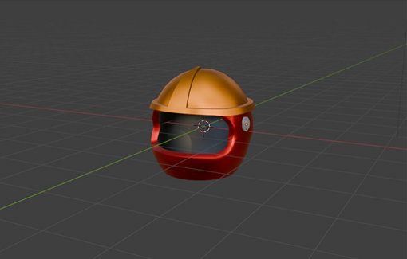

Описание проекта
«Выход есть!» — это настольная игра о действиях в чрезвычайных ситуациях. Она развивает критическое мышление, знание основ безопасности и умение действовать в стрессовых условиях. Игра бывает в двух режимах: быстрая и полная.
Режим 1: Быстрая игра (5–10 минут, без поля)
- Ведущий берёт карту ситуации и зачитывает её вслух.
- Игрок описывает, как бы он поступил в данной ситуации.
- Ведущий, опираясь на инструкции на обороте карты, начисляет или снимает жетоны репутации.
- Побеждает тот, у кого больше репутации по итогам 5–7 раундов.
Необходимые компоненты:
- Карты ситуаций (например: пожар, травма, утечка газа, короткое замыкание и др.)
- Жетоны репутации
Режим 2: Полная игра (30–60 минут, с игровым полем)
- Игроки по очереди бросают кубик и передвигаются по полю.
- В зависимости от локации, игрок берёт соответствующую карту ситуации.
- Игрок зачитывает ситуацию и описывает свои действия.
- Согласно инструкции на обороте карты, игрок получает или теряет жетоны репутации.
- Побеждает тот, кто накопит больше жетонов к концу игры.
- Игра заканчивается, когда заканчиваются карты хотя бы в одной из стопок.
Необходимые компоненты:
- Игровое поле
- Фишки игроков
- Карты ситуаций и действий
- Кубик для перемещения
- Жетоны репутации
Жетоны репутации
Жетоны представлены в виде небольших звёздочек. Одна звёздочка - один жетон репутации. Жетоны репутации отражают, насколько грамотно игрок действует в сложных ситуациях. Их можно заработать за правильные действия и потерять за ошибки.
Фишки игроков
Для перемещения по полю используются индивидуальные фишки. 3D-модель уже выполнена в Blender и готова к печати.
Карты ситуаций
На лицевой стороне карты — описание ситуации и вопрос «Выход есть?», который отсылает к названию игры. Внизу — цитата из фильма, подходящая к сценарию.
На оборотной стороне — подробные инструкции, какие действия считаются правильными и за что начисляются или снимаются жетоны.
Локации
Играть предстоит на игровом поле, которое охватывает разные жизненные локации:
- Дом
- Работа
- Общественное место
- Улица